Chapter 2: Examining Relationships
Expanded from Statistics_Chapter2_Examining_Relationships.pdf (19 pages) · View original handwritten pages
Once we have examined each variable on its own (Chapter 1), the second step of Exploratory Data Analysis is to study relationships among variables. This chapter follows the handwritten notes through scatterplots, Pearson correlation $r$, least-squares linear regression, residual diagnostics and influential points, lurking variables versus causation, and conditional distributions in two-way categorical tables.
Prelude: Response Variables and Explanatory Variables
In the chapter prelude (How much for my house?), a mortgage officer named Matthew tests the local real-estate "rule of thumb" that homes sell for $15\%$ above their city tax-assessed value. Plotting actual selling prices against assessed values reveals a linear relationship with slope $\approx 1.07$: homes in his town actually sell for about $7\%$ above assessed value on average, not $15\%$.
When studying how two variables relate, we distinguish their roles:
- A response variable ($y$) (often called the dependent variable) measures an outcome of a study.
- An explanatory variable ($x$) (often called the independent variable) explains or influences changes in a response variable.
2.1 Scatterplots
The most effective way to display the relationship between two quantitative variables measured on the same individuals is a scatterplot:
- Always plot the explanatory variable $x$ (if there is one) on the horizontal axis and the response variable $y$ on the vertical axis. If there is no explanatory–response distinction, either variable can go on the horizontal axis.
- Each individual in the dataset appears as a single point $(x_i, y_i)$ fixed by the values of both variables.
In Case 2.1 (Sales at a Retail Shop), three entrepreneurs operating the consignment shop Duck Worth Wearing recorded the number of items sold ($x$) and gross dollar sales ($y$) for each day of April 2000. Because the number of items sold explains gross dollar sales, item count sits on the horizontal axis:
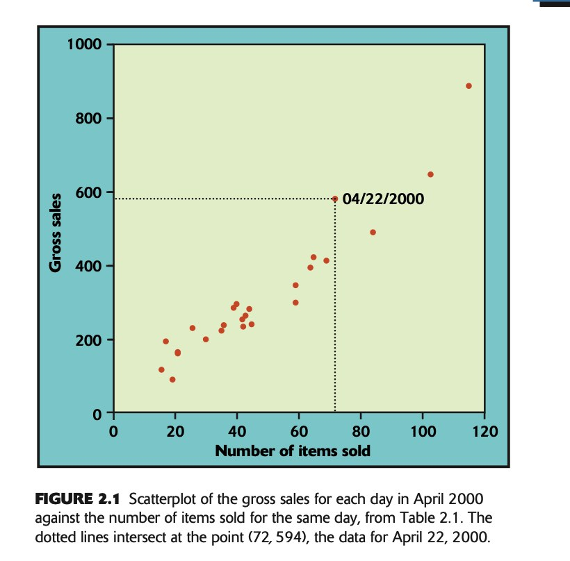
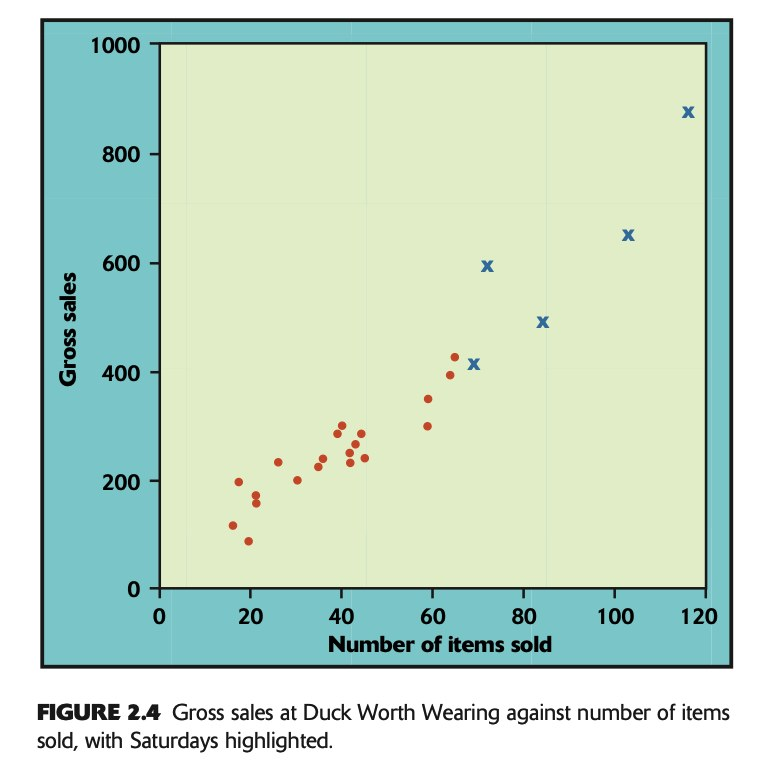
Interpreting Scatterplots: Form, Direction, Strength, and Association
To describe the overall pattern of a scatterplot, examine three features plus any deviations:
- Form: Linear, curved, or distinct clusters?
- Direction:
- Two variables are positively associated when above-average values of one tend to accompany above-average values of the other, and below-average values also tend to occur together (the scatterplot slopes upward from left to right).
- Two variables are negatively associated when above-average values of one tend to accompany below-average values of the other (the scatterplot slopes downward from left to right).
- Strength: How closely do the points follow a simple form such as a straight line?
- Outliers: Any individual point that falls clearly outside the overall bivariate pattern.
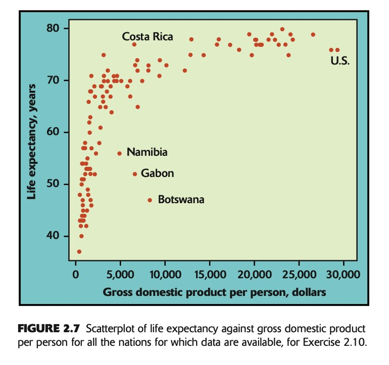
2.2 Correlation ($r$)
A linear relationship is strong if the points lie close to a straight line and weak if they are widely scattered. However, our eyes are unreliable judges of how strong a linear relationship is, because changing the plotting scales changes the visual appearance of the cloud:
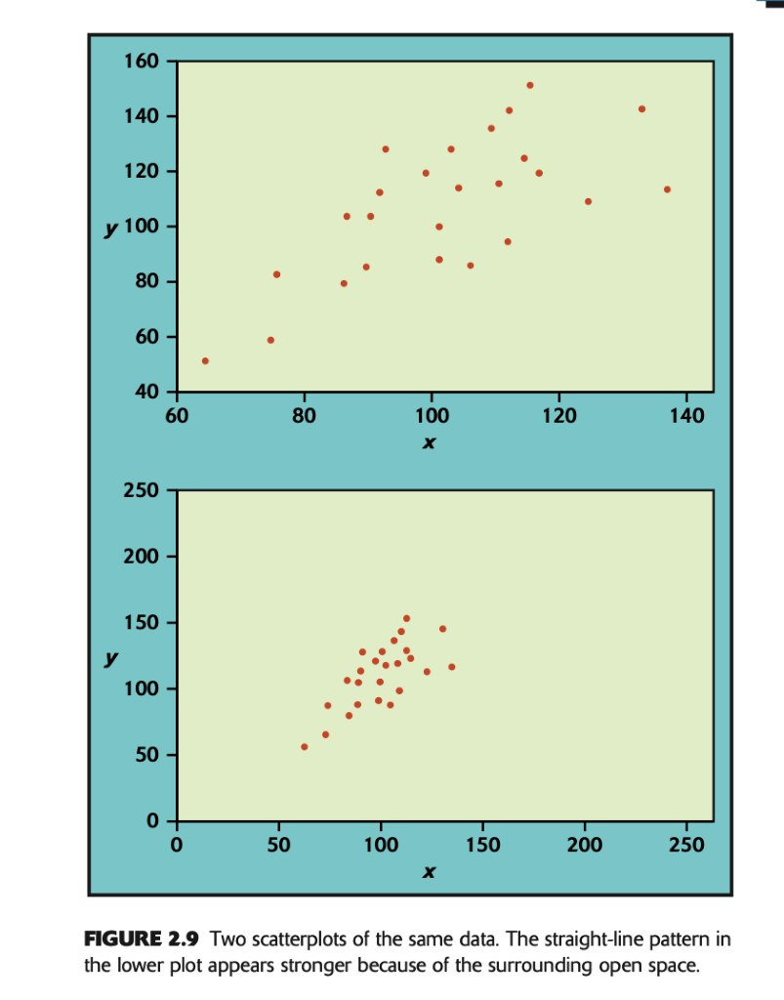
The Formula for Pearson Correlation $r$
Suppose we have data on variables $x$ and $y$ for $n$ individuals, with sample means $\bar{x}, \bar{y}$ and sample standard deviations $s_x, s_y$. The correlation $r$ between $x$ and $y$ is:
Notice how the formula works: it first converts every observation into its dimensionless standardized $z$-scores $z_{x,i} = (x_i - \bar{x})/s_x$ and $z_{y,i} = (y_i - \bar{y})/s_y$. When above-average values of $x$ ($z_{x,i} > 0$) pair with above-average values of $y$ ($z_{y,i} > 0$), and below-average values ($z_{x,i} < 0$) pair with below-average values ($z_{y,i} < 0$), the products $z_{x,i} z_{y,i}$ are predominantly positive, making $r > 0$.
Seven Essential Properties of Correlation $r$
- Symmetry between $x$ and $y$: Correlation makes no distinction between explanatory and response variables—switching $x$ and $y$ leaves the product of $z$-scores unchanged.
- Requires two quantitative variables: Both variables must be numerical so that $\bar{x}, s_x, \bar{y}, s_y$ exist. You cannot calculate a correlation between income and a categorical variable like city name.
- Unit-free (invariant to linear rescaling): Because $r$ uses standardized $z$-scores, changing the units of measurement (inches to centimeters, dollars to thousands of dollars) does not change $r$ at all.
- Sign gives direction: $r > 0$ indicates positive linear association; $r < 0$ indicates negative linear association.
- Bounded between $-1$ and $+1$: Always $-1 \le r \le 1$. Values near $0$ indicate a weak linear relationship; values near $+1$ or $-1$ indicate points that lie very close to a straight line (with $r = \pm 1$ occurring only when all points lie exactly on a straight line).
- Measures linear association only: Correlation does not describe curved relationships, no matter how strong the curve is.
- Not resistant to outliers: Because $r$ is built from $\bar{x}$, $\bar{y}$, $s_x$, and $s_y$, a single outlier can dramatically distort $r$.
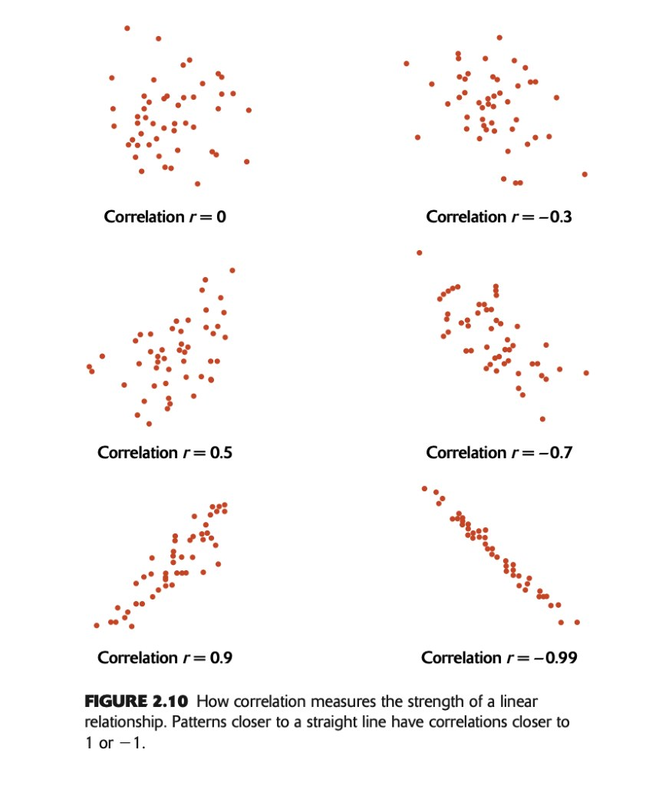
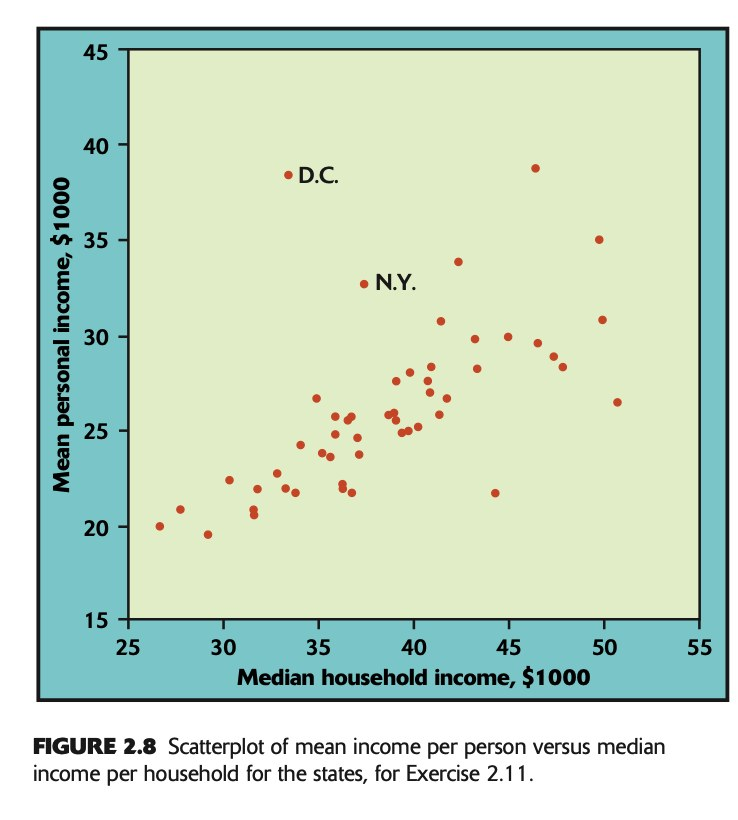
Even when a relationship is linear, correlation alone is not a complete summary of two-variable data: you should always report the means $(\bar{x}, \bar{y})$ and standard deviations $(s_x, s_y)$ alongside $r$.
2.3 Least-Squares Regression
When a scatterplot shows a linear relationship, we summarize the overall pattern by fitting a regression line—a straight line that describes how a response variable $y$ changes as an explanatory variable $x$ changes, allowing us to predict $\hat{y}$ for any given $x$.
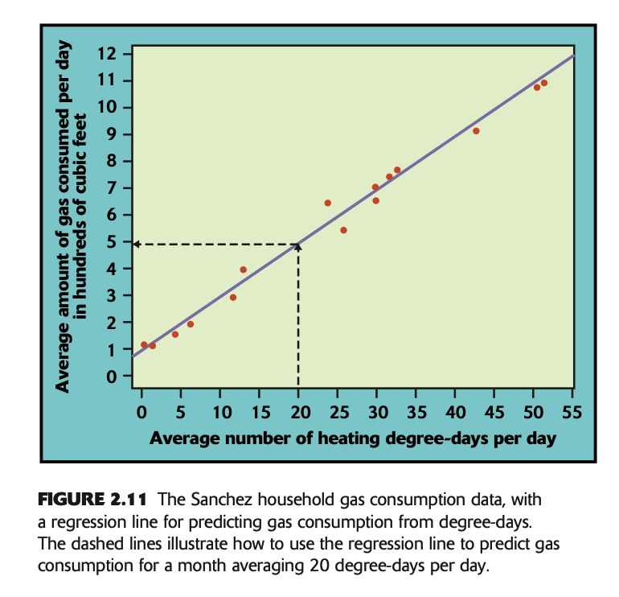
The Least-Squares Criterion and Line Equations
Because we use $x$ to predict $y$, our prediction errors occur in the vertical ($y$) direction:
The least-squares regression line of $y$ on $x$ is the unique line that makes the sum of the squares of the vertical distances of the data points from the line, $\sum_{i=1}^n (y_i - \hat{y}_i)^2$, as small as possible. In terms of the sample means $(\bar{x}, \bar{y})$, standard deviations $(s_x, s_y)$, and correlation $r$, the least-squares regression line is:
- Slope $b = r\frac{s_y}{s_x}$: The rate of change—the predicted change in the response $y$ when the explanatory variable $x$ increases by $1$ unit.
- Intercept $a = \bar{y} - b\bar{x}$: The predicted value of $y$ when $x = 0$. (This is statistically meaningful only when $x$ actually takes values near $0$ in the context of the problem.)
Four Fundamental Facts About Least-Squares Regression
- The explanatory–response distinction is essential: Unlike correlation $r$, reversing the roles of $x$ and $y$ produces a different least-squares line! Regressing $y$ on $x$ minimizes vertical squared distances, whereas regressing $x$ on $y$ minimizes horizontal squared distances (Figure 2.14 below).
- Connection between correlation $r$ and slope $b$: Rewriting the slope formula as $$b = r\,\frac{s_y}{s_x} \iff b\,s_x = r\,s_y$$ shows that a change of $1$ standard deviation in $x$ corresponds to a predicted change of $r$ standard deviations in $y$ along the regression line. Only when $x$ and $y$ are perfectly correlated ($r = \pm 1$) does a $1\text{-SD}$ move in $x$ predict a full $1\text{-SD}$ move in $y$.
- The line always passes through $(\bar{x}, \bar{y})$: Substituting $x = \bar{x}$ into $\hat{y} = a + bx = (\bar{y} - b\bar{x}) + b\bar{x}$ gives $\hat{y} = \bar{y}$. The regression line pivots directly through the center of gravity $(\bar{x}, \bar{y})$.
- The square of the correlation ($r^2$) measures explained variation: In regression, $r^2$ is the fraction of the total variation in the observed values of $y$ that is accounted for by the linear relationship with $x$:
$$r^2 = \frac{\text{Variation in }\hat{y}\text{ as }x\text{ pulls it along the regression line}}{\text{Total variation in observed values of }y} = \frac{\sum_{i=1}^n (\hat{y}_i - \bar{y})^2}{\sum_{i=1}^n (y_i - \bar{y})^2}.$$
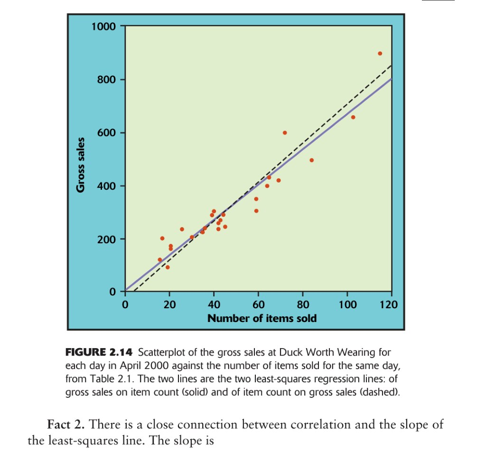
• Sanchez household gas use vs. degree-days: $r = 0.9953 \implies r^2 = (0.9953)^2 = \mathbf{0.9906}$. Over $99\%$ of the month-to-month variation in natural gas consumption is explained by the straight-line relationship with heating degree-days.
• Duck Worth Wearing gross sales vs. items sold: $r = 0.9540 \implies r^2 = (0.9540)^2 = \mathbf{0.9101}$. Thus $91\%$ of the day-to-day variation in gross dollar sales is explained by the number of items sold.
Residuals, Residual Plots, and Influential Observations
A residual is the difference between an observed value of the response variable and the value predicted by the regression line:
Because the least-squares line passes through $(\bar{x}, \bar{y})$, the mean of the least-squares residuals is always zero:
A residual plot scatters the residuals $y_i - \hat{y}_i$ on the vertical axis against the explanatory variable $x_i$ on the horizontal axis, with a horizontal reference line at $0$. Magnifying the vertical deviations makes it easy to diagnose whether a linear model is appropriate:
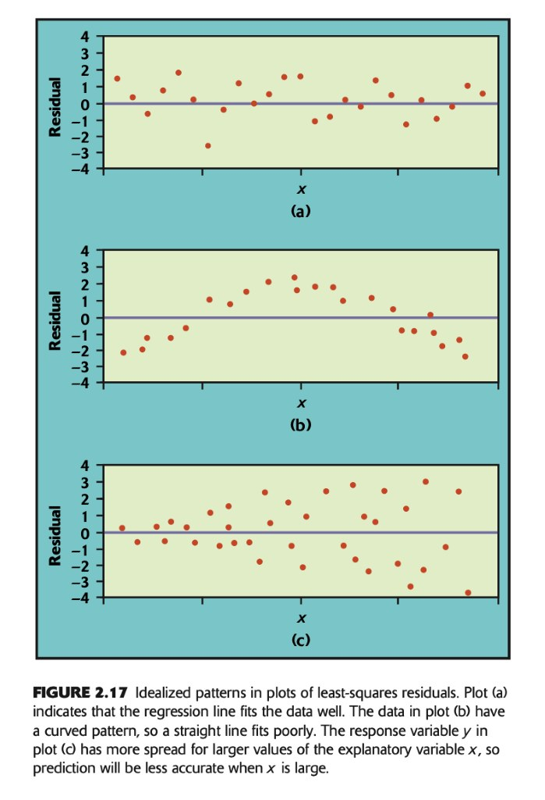
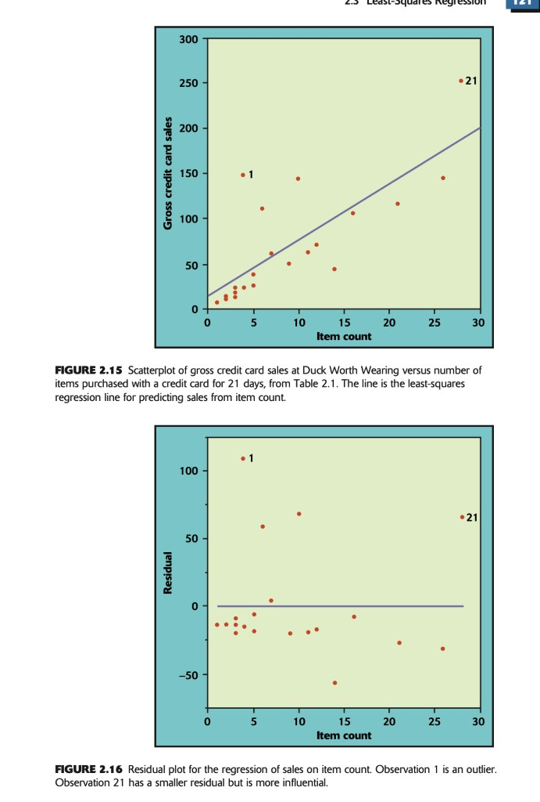
Outliers versus Influential Observations: Look closely at Observations $1$ and $21$ in the credit-card sales dataset above:
- Observation 1 is an outlier in the vertical ($y$) direction: it lies far above the regression line and has the largest residual on the residual plot.
- Observation 21 is extreme in the horizontal ($x$) direction ($29$ credit-card items sold, nearly double any other day). Because it sits so far out on the $x$-axis, it acts like a heavy weight at the end of a lever, pulling the least-squares regression line toward itself! As a result, its own residual looks deceptively modest.
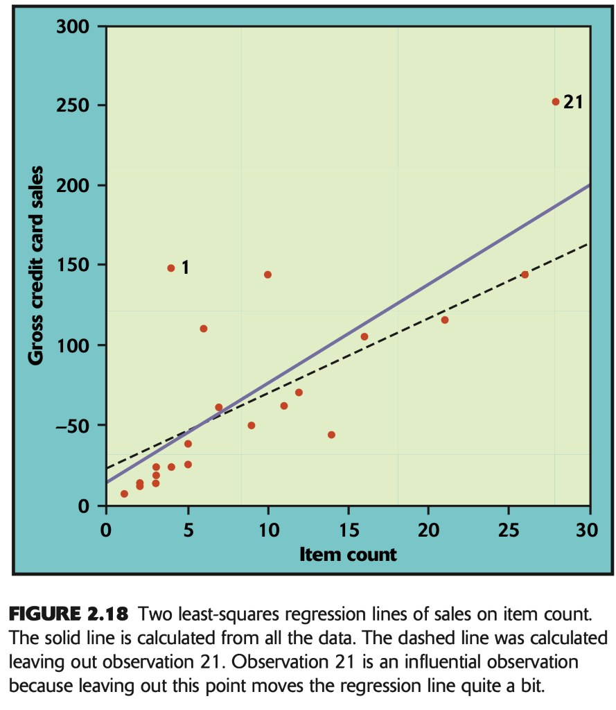
2.4 Cautions About Correlation and Regression
Beyond checking for nonlinearity and influential points, the handwritten notes highlight four major traps when interpreting correlation and regression:
1. Beware Extrapolation
Extrapolation is the use of a regression line for prediction far outside the range of values of the explanatory variable $x$ used to obtain the line. Even an almost perfect linear trend within your sample window rarely continues indefinitely:
| Year ($x$) | 1990 | 1991 | 1992 | 1993 | Extrapolated 2000 | Actual 2000 |
|---|---|---|---|---|---|---|
| Stores ($y$) | 420 | 463 | 506 | 554 | 864 stores | 977 stores |
From 1990 to 1993, the store counts followed a nearly exact straight line ($r = 0.9996$), predicting $864$ stores by the end of 2000. Yet Target's expansion accelerated in the late 1990s to $977$ actual stores—an extrapolation miss of $113$ stores.
2. Beware Correlations Based on Averaged Data
Correlations calculated from group averages (such as monthly averages, state averages, or age-group means) are systematically higher than correlations calculated on individual observations. For example, in the Sanchez household gas data, averaging degree-days and gas usage over entire months ($r = 0.9953$) smooths out day-to-day noise (such as a door left open or house guests taking extra hot showers). Applying an aggregate correlation directly to individuals is known as the ecological fallacy.
3. Beware the Lurking Variable
A lurking variable is a variable that is not among the explanatory or response variables in a study and yet may influence the interpretation of relationships among those variables—either creating a false appearance of a strong relationship or masking a real one.
Looking deeper reveals a critical lurking variable: patient age and frailty. Women develop heart problems on average $10\text{ to }15\text{ years}$ later in life than men, and aggressive bypass surgery carries much higher risk for older patients with comorbidities. Once age and clinical condition are accounted for, the apparent gender gap is largely explained by the lurking age difference.
4. Association Is Not Causation
A strong correlation ($r$ close to $\pm 1$) never by itself proves that changing $x$ will cause $y$ to change. Across nations, the number of television sets per capita has a high positive correlation with life expectancy—yet shipping television sets to Rwanda will not lengthen lives! Both variables are driven by a common lurking cause: national wealth, sanitation, and healthcare infrastructure.
- The association is strong: Heavy smokers have a dramatically higher rate of lung cancer than nonsmokers.
- The association is consistent: Many independent studies across different populations, countries, and occupations find the same link, reducing the chance of a group-specific lurking variable.
- Higher doses are associated with stronger responses: People who smoke more cigarettes per day over more years suffer higher cancer rates, and people who quit smoking see their risk decline.
- The alleged cause precedes the effect in time: Lung cancer develops after decades of smoking; national lung cancer mortality rose among men with an approximately $30\text{-year}$ lag after cigarette adoption surged.
- The alleged cause is plausible: Controlled laboratory experiments on animals confirm that tars from cigarette smoke directly induce malignant tumors.
2.5 Relations in Categorical Data: Two-Way Tables
When both variables are categorical, we cannot plot a scatterplot or compute $r$. Instead, we cross-classify counts of individuals in a two-way table (contingency table). In Case 2.2 (Marital Status and Job Level), a large corporation cross-classified all $8{,}235$ of its male employees by Job Grade ($1 = \text{lowest quarter}$ to $4 = \text{highest quarter}$, the response row variable) and Marital Status (the explanatory column variable):
| Job Grade | Single | Married | Divorced | Widowed | Row Total |
|---|---|---|---|---|---|
| Grade 1 (lowest) | 58 | 874 | 15 | 8 | 955 |
| Grade 2 | 222 | 3,927 | 70 | 20 | 4,239 |
| Grade 3 | 50 | 2,396 | 34 | 10 | 2,490 |
| Grade 4 (highest) | 7 | 533 | 7 | 4 | 551 |
| Column Total | 337 | 7,730 | 126 | 42 | 8,235 |
Marginal Distributions
To grasp the baseline totals in a two-way table, first look at the distribution of each variable separately. The distributions of Job Grade alone (from the right margin's row totals) and Marital Status alone (from the bottom margin's column totals) are called marginal distributions:
• Grade 1: $\frac{955}{8{,}235} = 0.1160 = \mathbf{11.60\%}$
• Grade 2: $\frac{4{,}239}{8{,}235} = 0.5148 = \mathbf{51.48\%}$
• Grade 3: $\frac{2{,}490}{8{,}235} = 0.3024 = \mathbf{30.24\%}$
• Grade 4: $\frac{551}{8{,}235} = 0.0669 = \mathbf{6.69\%}$
Total $= 100.01\%$ (differs from $100.00\%$ by $0.01\%$ due to rounding each entry to two decimal places).
Conditional Distributions
Marginal distributions say nothing about the relationship between marital status and job grade. To compare how job grades differ across marital groups, we calculate the conditional distribution of the response variable (Job Grade) within each separate value of the explanatory variable (Marital Status)—dividing each cell count by its column total:
| Job Grade | Single ($n=337$) | Married ($n=7{,}730$) | Divorced ($n=126$) | Widowed ($n=42$) |
|---|---|---|---|---|
| Grade 1 | $58/337 = \mathbf{17.21\%}$ | $874/7{,}730 = \mathbf{11.31\%}$ | $15/126 = \mathbf{11.90\%}$ | $8/42 = \mathbf{19.05\%}$ |
| Grade 2 | $222/337 = \mathbf{65.88\%}$ | $3{,}927/7{,}730 = \mathbf{50.80\%}$ | $70/126 = \mathbf{55.56\%}$ | $20/42 = \mathbf{47.62\%}$ |
| Grade 3 | $50/337 = \mathbf{14.84\%}$ | $2{,}396/7{,}730 = \mathbf{31.00\%}$ | $34/126 = \mathbf{26.98\%}$ | $10/42 = \mathbf{23.81\%}$ |
| Grade 4 | $7/337 = \mathbf{2.08\%}$ | $533/7{,}730 = \mathbf{6.90\%}$ | $7/126 = \mathbf{5.56\%}$ | $4/42 = \mathbf{9.52\%}$ |
| Column Total | 100.01% | 100.01% | 100.00% | 100.00% |
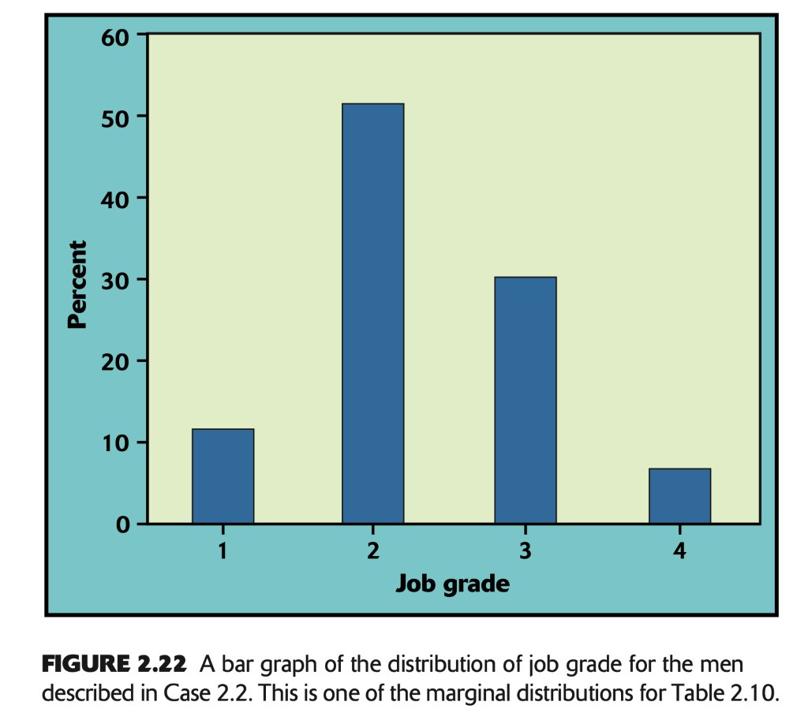
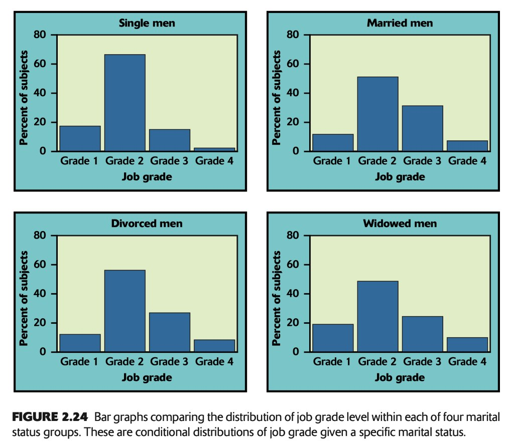
From the Handwritten Notes
Open the original handwritten scans from Statistics_Chapter2_Examining_Relationships.pdf below to compare the formulas and diagrams directly:
View original page 5 — Why visual scatter deceives & the correlation formula $r$

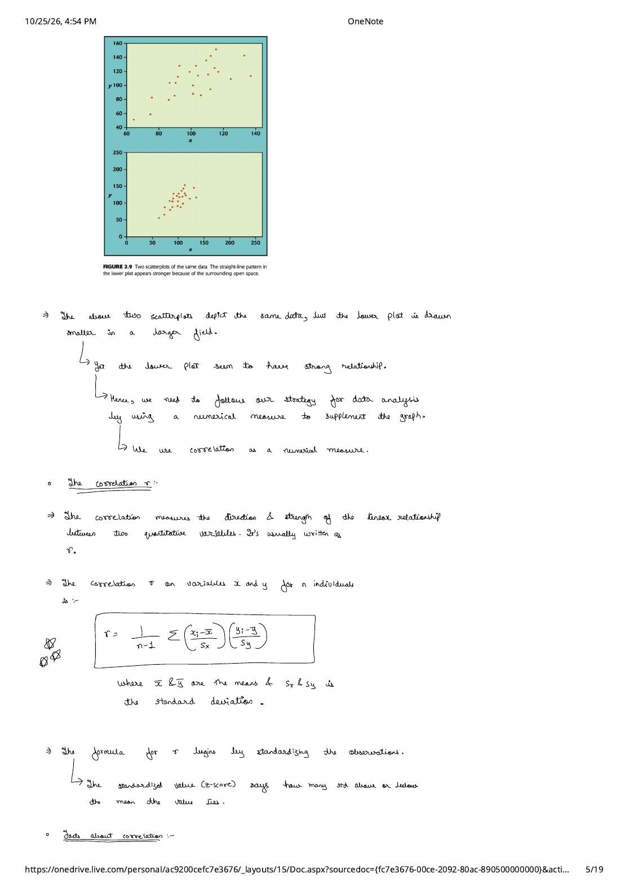
View original page 9 — Least-squares regression equations ($b = r s_y/s_x$, $a = \bar{y} - b\bar{x}$) & asymmetry

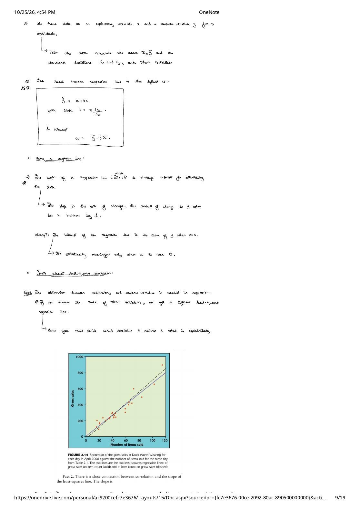
View original page 10 — Regression facts & the coefficient of determination $r^2$

View original page 13 — Influential observations & their effect on $r^2$

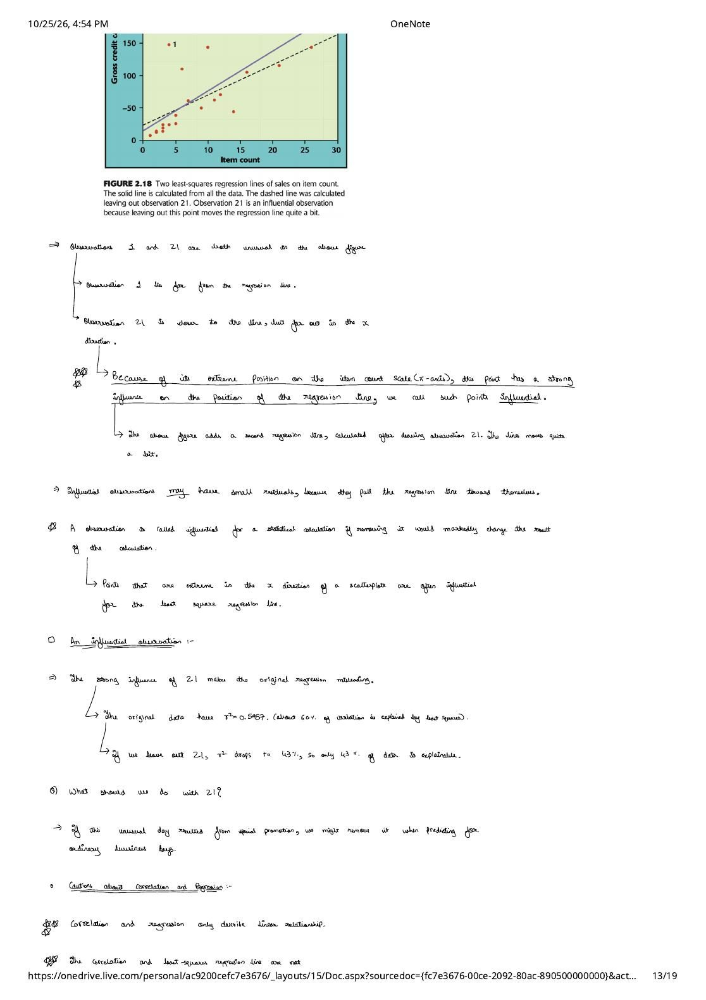
View original page 15 — Association is not causation & 5 criteria for establishing causation

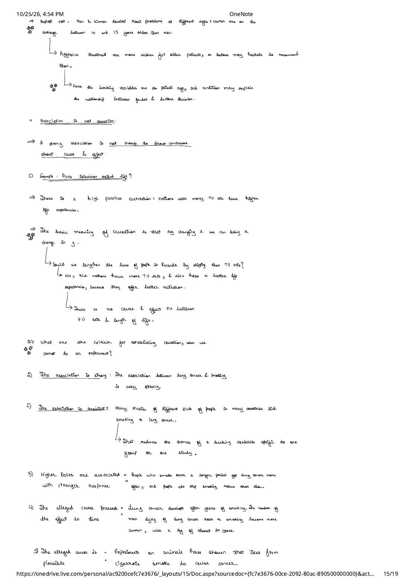
View original page 17 — Marginal vs. conditional distributions in two-way tables

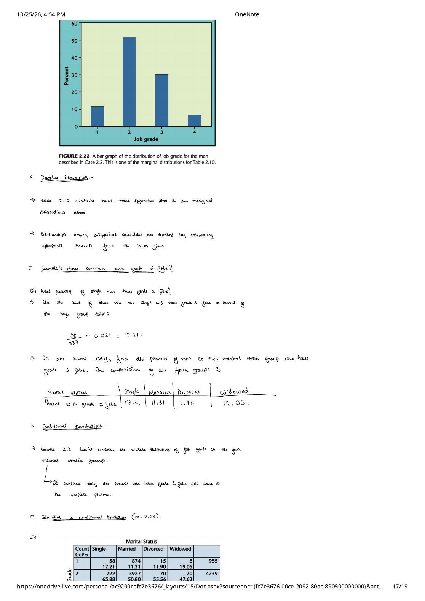